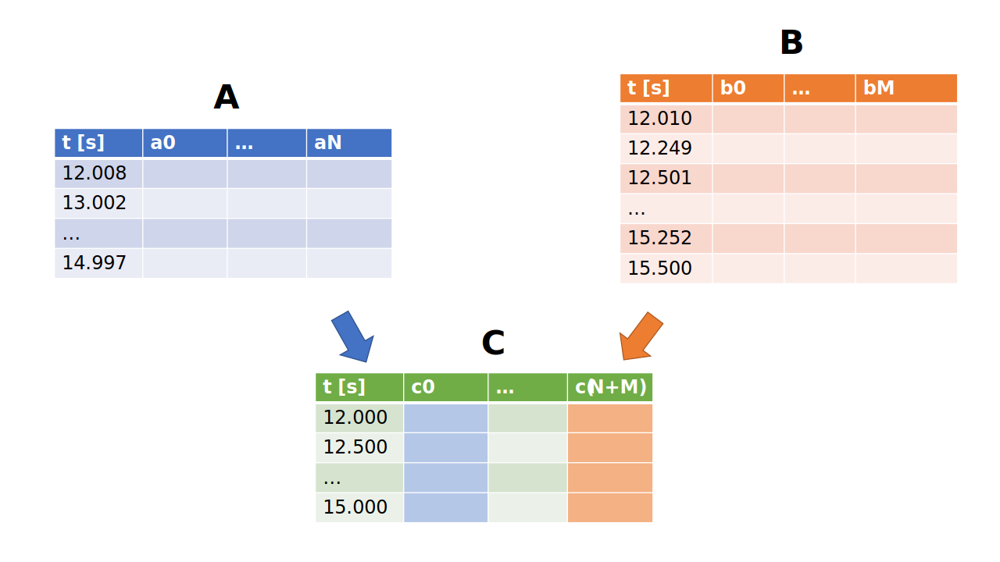

Merging datasets
Motivation
Merging two time series datasets with varying sampling frequencies can be a complex and challenging task, yet it is a common problem in many fields such as finance, economics, and engineering. Time series data refers to a sequence of observations taken at regular intervals over time. However, in real-world scenarios, it is not uncommon to have two or more time series datasets collected at different sampling frequencies (as in Fig. 1), making it difficult to combine them into a single dataset for analysis.
The problem of merging time series data with varying sampling frequencies arises because the data points in each dataset are not necessarily aligned, leading to gaps or overlapping time periods. To merge such datasets, we need to decide how to handle these gaps and overlaps while preserving the integrity of the data. Moreover, merging time series datasets requires careful consideration of the data quality, accuracy, and completeness, as well as the statistical properties of the data.
In this chapter we will deal with merging of multiple datasets with varying sample frequencies into one dataset with a predefined frequency \( f_C \) which can be used for further investigation or analysis.

Figure 1: Illustration of the merging problem discussed in this chapter. Dataset \( \mathbf A \) with \( N \) columns is sampled with a a frequency of \( f_A = 1 Hz \). Dataset \( \mathbf B \) (\( M \) columns) which covers similar time period, is sampled with \( f_B = 4 Hz \). The goal is to create a dataset C with a predefined frequency \( f_C \) which contains the information from the columns of the source datasets.
Methodology
We can solve the above mentioned problem by applying the following three steps:
- Decide about the target frequency \( f_C \)
- Interpolate (Up/Downsample the data), decide for each column individually
- Join the data by time
In the subsequent sections, we will discuss some details crucial for each step.
Choice of the target frequency
Instead of randomly selecting one of the frequencies \( f_A \) or \( f_B \) we can base our decision on following criteria:
- Information loss: Especially when working with high frequency data such as sound waves or road oscillations, you want to keep the information contained in the signal. As Nyquist–Shannon sampling theorem states, in order to capture information from a signal represented in a specific frequency band, you need to sample the data at least twice this frequency.1 For an periodic bump in the road happening each \( d = 10m \) with our vehicle driving \( v_0 = 33.3 \frac m s = 120 \frac{km}{h} \), we need to sample higher than \( f_{C, min} = 2 \frac{v_0}{d} = 6.6 Hz \).
- Computational resources: depending on the computation capacity of your machine or cluster of machines, you may consider a smaller target frequency to fit the data into memory or to limit the time needed for a computation.
- Consumer applications: depending on your use-case with the merged dataset, you may want to decrease or increase the frequency - usually reporting applications use a smaller frequency as those used for video rendering where a frequency of min 30fps is desired
Interpolation
As discussed in the Interpolation chapter, you need to decide for a suited interpolation method. A good first choice for physical signals is the linear, for categorical signals nearest-neighbor interpolation method.
In the context of perception and object tracking (as discussed in chapter TODO), you have to interpolate for each object ID individually. Interpolation without that consideration may lead to data loss, since the perception often tracks multiple objects at the same point in time.
Join the data
Having both datasets A and B with the same time-stamps as indices we can apply a JOIN-like operation. Here we can to decide for LEFT, RIGHT or INNER-join depending on the application and use case:
-
INNER: returns records when there is a match in both tables. -
LEFT: returns all records from the left table, even if there are no matches in the right table. -
RIGHT: returns all records from the right table, even if there are no matches in the left table.
For the latter two cases, note that the columns of the missing records will be filled with placeholder value such as NaN (not a number).
Implementation
The pandas library provides an extensive set of functions for resampling, grouping (by ID for object-lists) and joining the data:
- resampling:
pd.DataFrame.asfreq,pd.DataFrame.resample - joining:
pd.merge,pd.DataFrame.join - grouping:
pd.DataFrame.groupby
In addition, combined functions exist, such as pd.merge_asof which combines both the resampling and joining in one operation.
# we assume both dataframes have a datetime-index
# the resampling is done to the floor of 10ms
df_a = df_a.resample('10ms').interpolate('linear')
df_b = df_b.resample('10ms').nearest()
df_c = df_a.join(df_b, how='left')